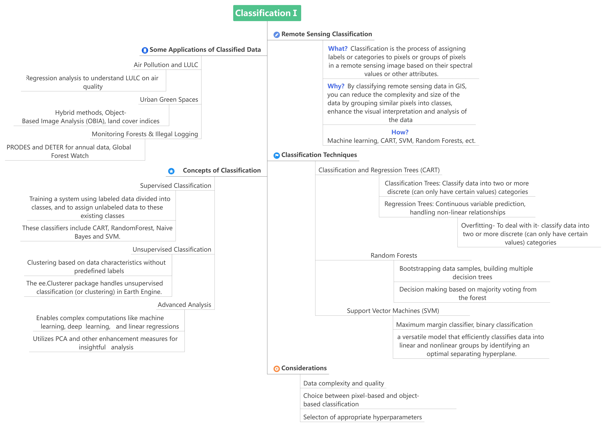

6 week 7 - classification
6.1 Overview

It seems like we get into machine learning with Google Earth Engine this week.
Yes!Let’s explore more!
CART is a type of predictive algorithm that can be used for both classification and regression, which uses Gini Index criterion to split a node to a sub-node(Breiman et al., 1984).In Google Earth engine, it is included in supervised classification algorithms.
Classification trees are tree models designed for scenarios where the target variable encompasses a specific set of discrete outcomes, with the branches indicating feature combinations leading to distinct class labels represented by the leaves.
Conversely, regression trees deal with target variables that assume continuous values, usually within the real number range(Studer et al., 2011).
I also get a summary of this week’s knowledge!
- Classification serves critical roles in extracting meaningful information from Earth Observation (EO) data for various applications.
- Both supervised and unsupervised methods have their merits, with the choice of method depending on the specific application and available data.
- Advanced methods like Random Forests and SVM provide powerful tools for handling complex classification tasks, though they come with considerations regarding model complexity and overfitting.
Awesome!
6.2 Applications
For high-resolution remote sensing images, the spectral features of ground objects become increasingly complex, making phenomena like “same object, different spectra” and “different objects, same spectrum” more pronounced. This complexity leads to a decrease in the accuracy of traditional parametric methods such as Minimum Distance Classification (MDC) and Maximum Likelihood Classification (MLC). Consequently, non-parametric methods like Support Vector Machines (SVM), Artificial Neural Networks (ANN), and Decision Trees (DT) have found widespread application in classifying high-resolution remote sensing images. However, these methods are considered shallow learning algorithms and often struggle to effectively model complex functions or adapt to complex samples. They also face challenges in accurately estimating the parameters of classifier models, leading to unsatisfactory classification results.
A scientific team conducted an experiment using remote sensing datasets from Helsinki, Finland, titled “CNN-Based Land Cover Classification Combining Stratified Segmentation and Fusion of Point Cloud and Very High-Spatial Resolution Remote Sensing Image Data.” This experiment demonstrates that CNN (Convolutional Neural Network) classification methods can effectively improve the accuracy of remote sensing image classification(Zhou et al., 2019). However, as a novel machine learning approach, CNNs still have many imperfections. These mainly include the complexity and large number of network model parameters, lengthy training times, and a lack of comprehensive theoretical support for network model structure design, necessitating extensive experimentation to identify optimal parameters. Moving forward, the focus of research will shift towards improving model training speed and identifying the best parameters.
6.3 Reflection
When we explore the potential of convolutional neural networks (CNN), we should not be limited to the classification of remote sensing images. The application scope of CNN goes far beyond the boundaries of a single field, and the types of images it can process and analyze are also very wide. For example, in urban street monitoring, CNN can be used to monitor changes in urban layout, traffic flow, and even public safety events. This technology can not only improve the efficiency of urban management, but also respond to emergencies in real time and improve the quality of life of urban residents.
By combining CNN in street monitoring and remote sensing data, we can achieve more comprehensive and dynamic urban management. Remote sensing technology can monitor urban development, environmental changes and natural resource utilization from a macro perspective, while street-level monitoring provides a microscopic perspective, capturing the details of a city’s daily operations. The combination of the two allows urban planners and managers to more accurately understand the development dynamics of the city and make more reasonable decisions.
6.4 References
Breiman, L., Friedman, J.H., Olshen, R.A. and Stone, C.J., 1984. Classification and Regression Trees. Monterey, CA: Wadsworth & Brooks/Cole Advanced Books & Software. ISBN 978-0-412-04841-8.[Accessed 5 March 2024]
Pal, M. & Mather, P.M., 2005. Support vector machines for classification in remote sensing. International Journal of Remote Sensing, 26(5), pp.1007-1011. https://doi.org/10.1080/01431160512331314083.[Accessed 5 March 2024]
Studer, M., Ritschard, G., Gabadinho, A. and Müller, N.S., 2011. Discrepancy Analysis of State Sequences. Sociological Methods & Research, 40(3), pp.471-510. https://doi.org/10.1177/0049124111415372.[Accessed 7 March 2024]
Yang, C.-C., Prasher, S.O., Enright, P., Madramootoo, C., Burgess, M., Goel, P.K. and Callum, I., 2003. Application of decision tree technology for image classification using remote sensing data. Agricultural Systems, 76(3), pp.1101-1117. https://doi.org/10.1016/S0308-521X(02)00051-3.[Accessed 5 March 2024]
Zhou, K., Ming, D., Lv, X., Fang, J. and Wang, M., 2019. CNN-based land cover classification combining stratified segmentation and fusion of point cloud and very high-spatial resolution remote sensing image data. Remote Sensing, 11(17), 2065. https://doi.org/10.3390/rs11172065.[Accessed 5 March 2024]